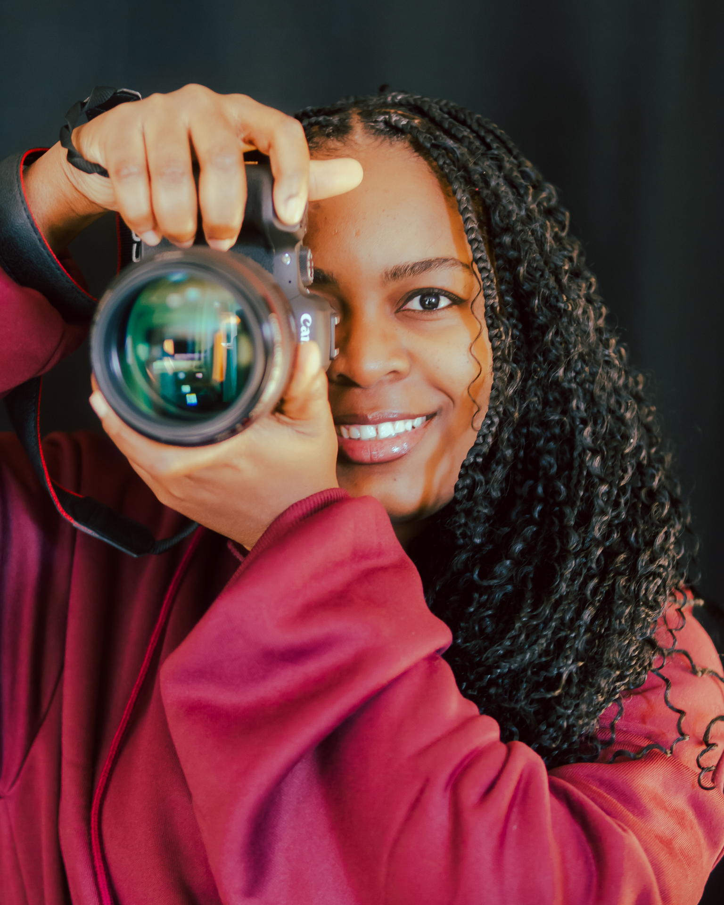
À propos de moi
Passionnée par l’art de la photographie et par la création visuelle sous toutes ses formes, je développe un regard sensible porté sur l’humain, la lumière et le mouvement.
Photographe freelance, mon parcours est guidé par une fascination pour la mise en scène et par l’envie de capturer des instants sincères, qu’il s’agisse d’un regard, d’un geste ou d’une atmosphère.
Chaque image est pour moi une opportunité de figer un moment unique et de révéler des détails souvent invisibles à l’œil nu.
Mon domaine d’intérêt s’articule autour du portrait, des expressions humaines, du mouvement et de l’activité physique, de la street photography et des scènes de vie, ainsi que du lifestyle, du storytelling visuel et de l’événementiel.
Sport
À travers le sport, je m'attache à capturer le mouvement, l'effort et l'énergie. J'essaie de saisir l'intensité d'un geste, la concentration d'un regard et l'énergie qui se dégage, afin de traduire visuellement l'expérience sportive dans toute sa dimension humaine.
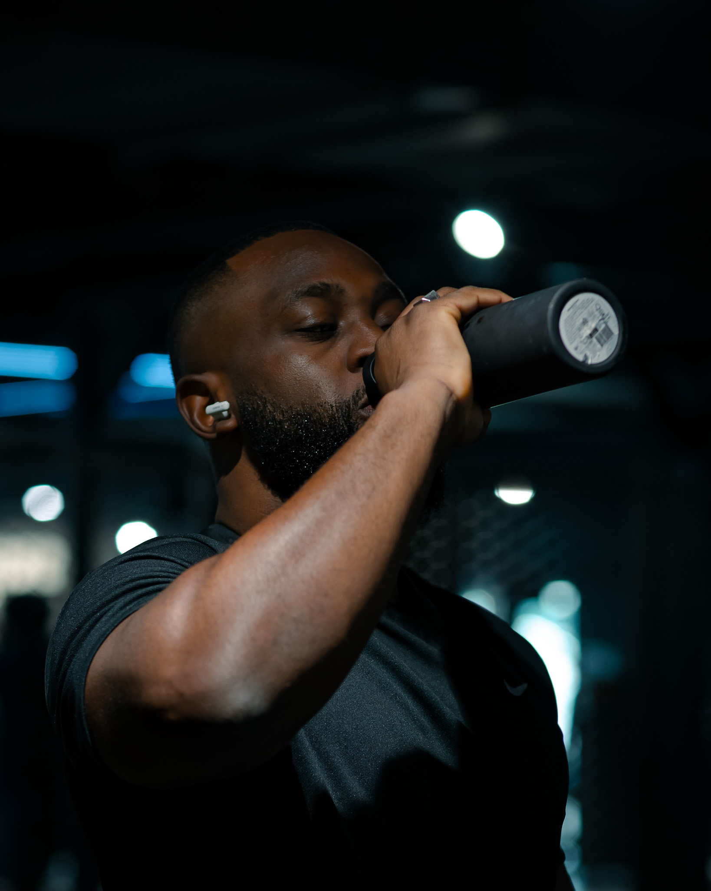
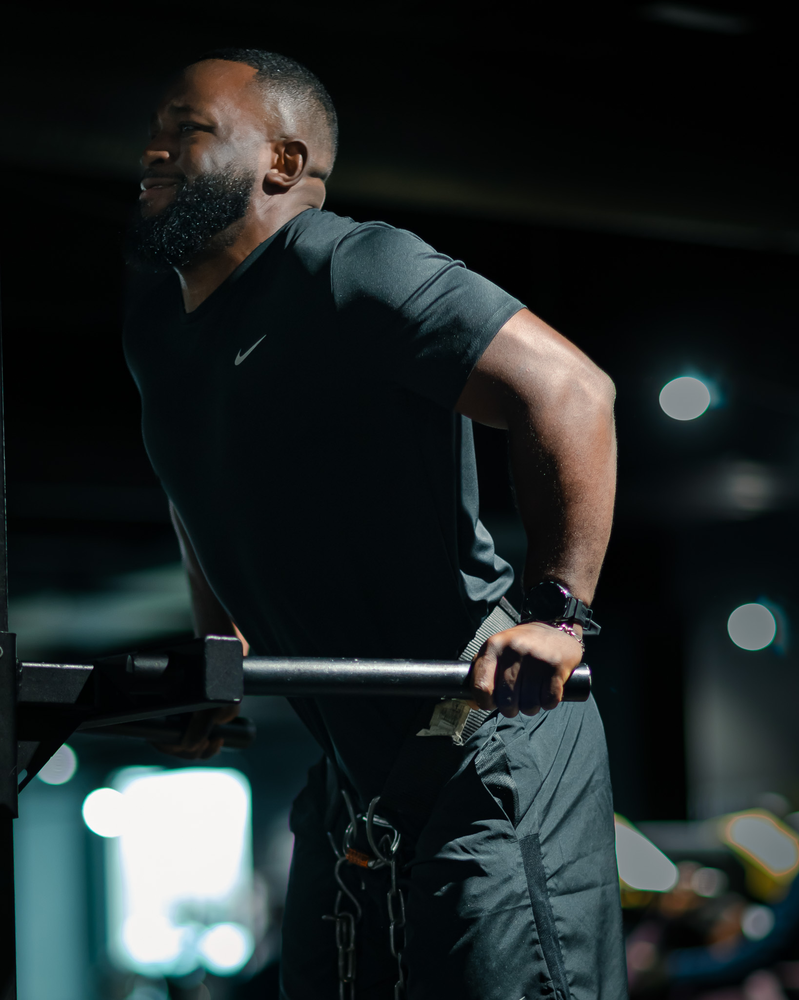
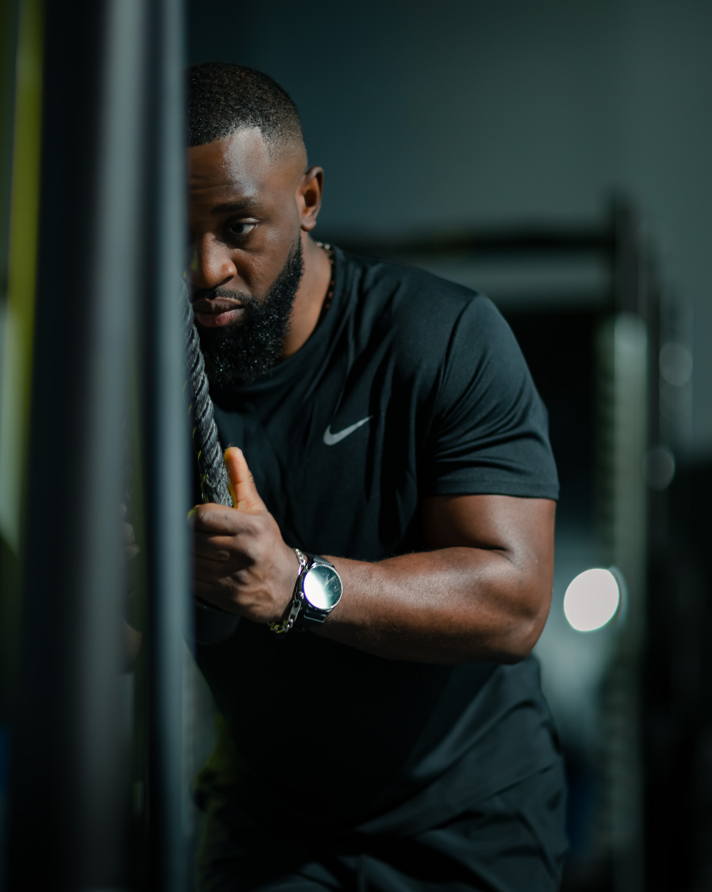
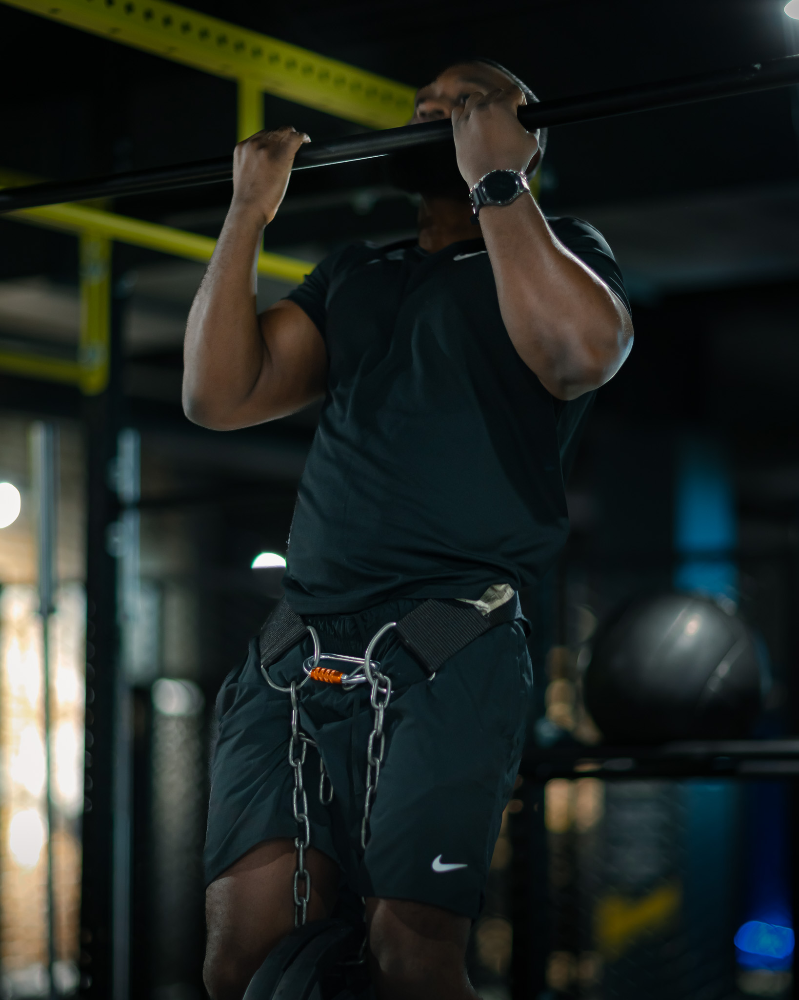
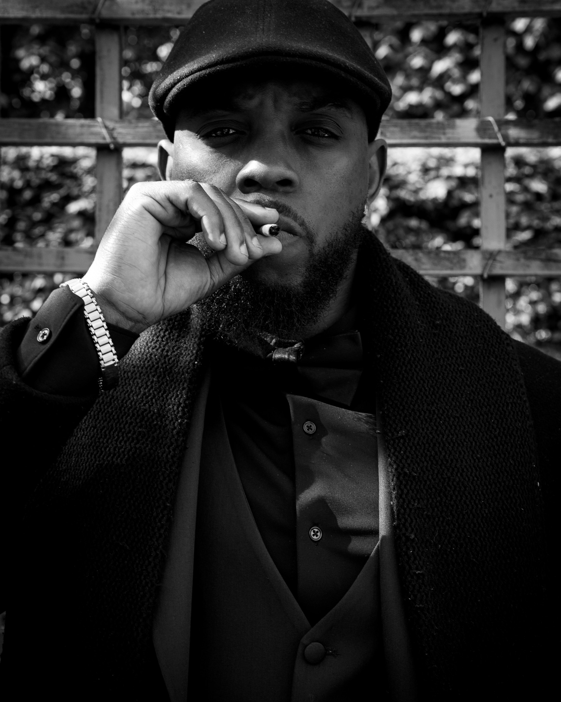
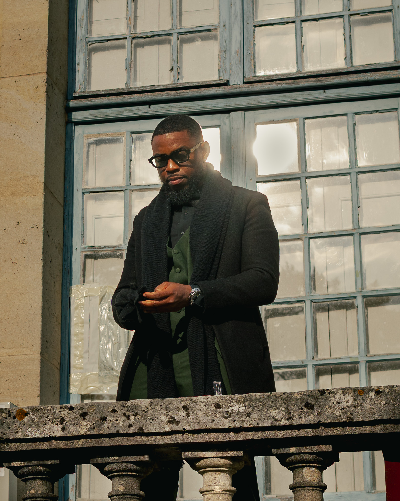
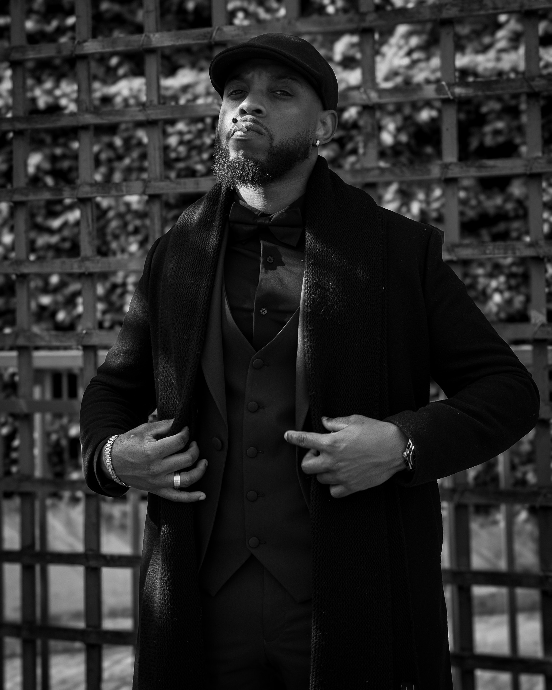
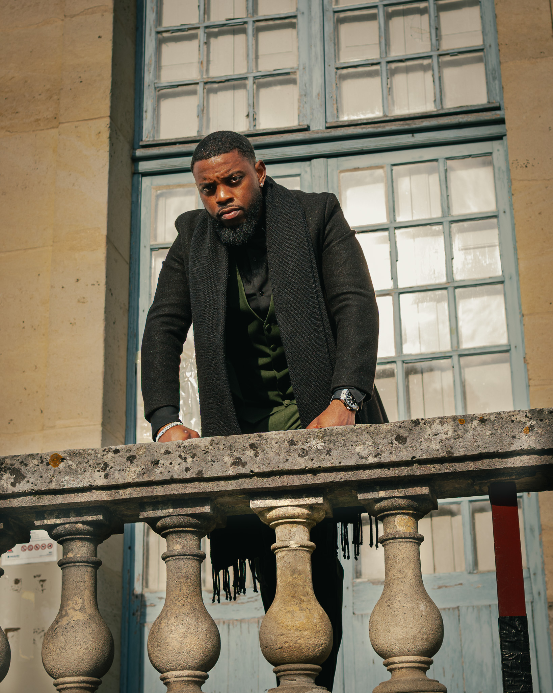
Portrait & Lifestyle
À travers le portrait et le lifestyle, je cherche à capturer l'essence et la singularité de chaque individu. J'accorde une attention particulière aux regards, aux expressions et aux détails du quotidien, afin de révéler des émotions sincères.
Événementiel
À travers la couverture d'événements, je m'attache à capturer l'ambiance, les moments clés et les émotions du public, en m'adaptant au rythme de chaque instant pour restituer fidèlement l'énergie du lieu.
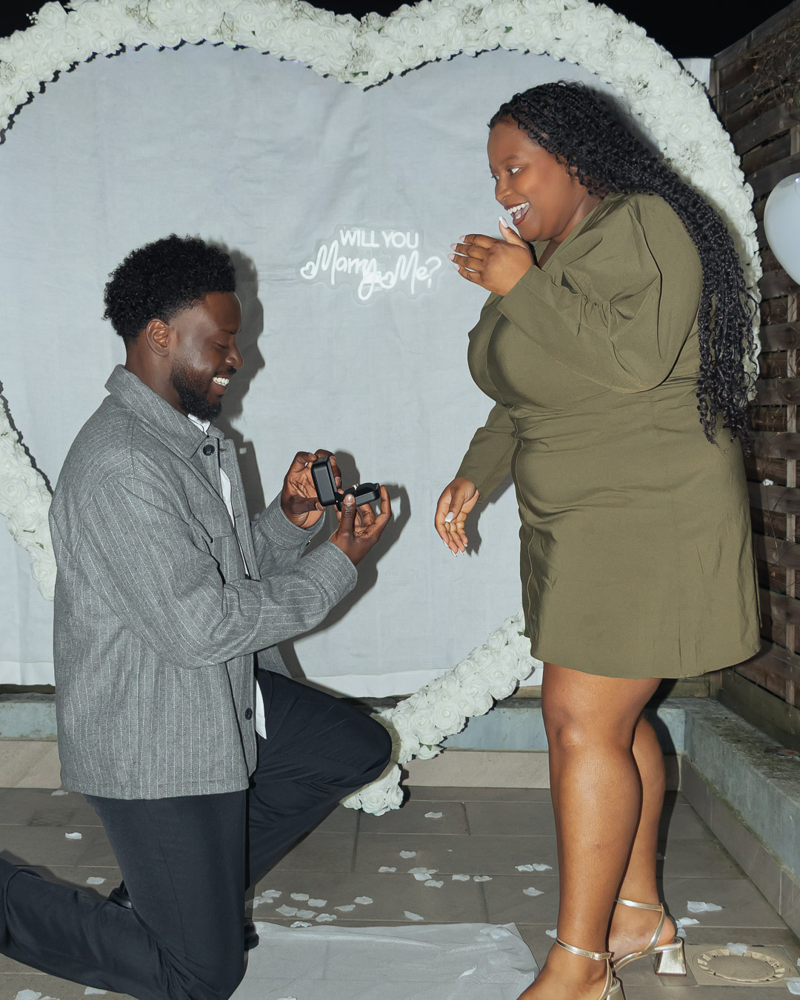
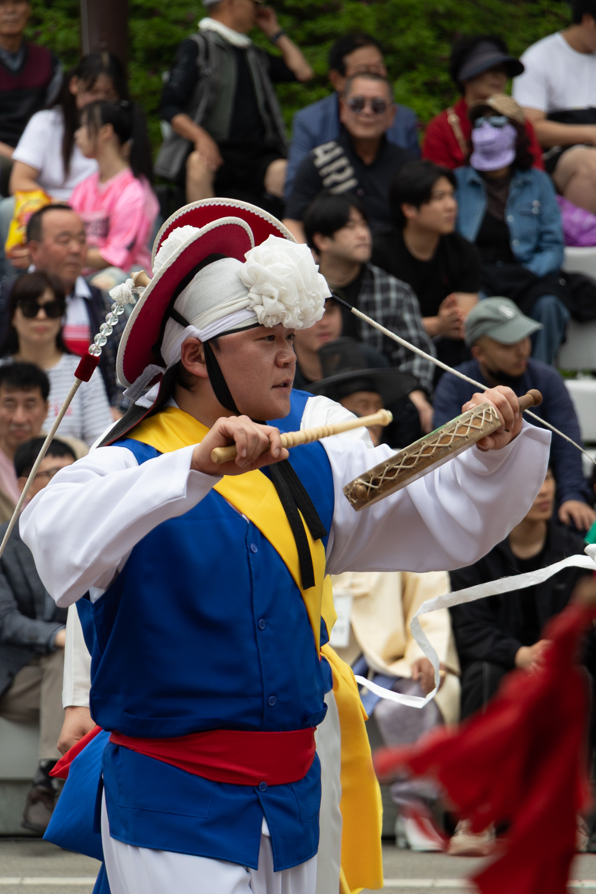
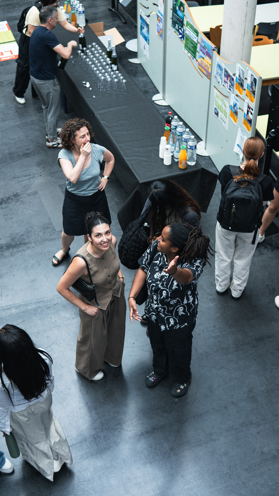
Création de Contenu
Des vidéos pensées pour raconter, valoriser et engager; chaque plan construit une histoire visuelle cohérente.
Mon Offre
Je propose la couverture photographique de vos événements — soirées, mariages, conférences, concerts — en mettant l'accent sur les moments clés, les émotions des invités et l'ambiance générale du lieu.
- Livraison sous 24 à 48 heures
- Formats optimisés réseaux sociaux - Instagram 4:5 & Stories
- 20 à 40 photos retouchées - version web & haute définition
Merci
Chaque image raconte une histoire.
Si vous souhaitez en écrire une ensemble, je serais ravie d’échanger avec vous.
 Ile-de-France
Ile-de-France